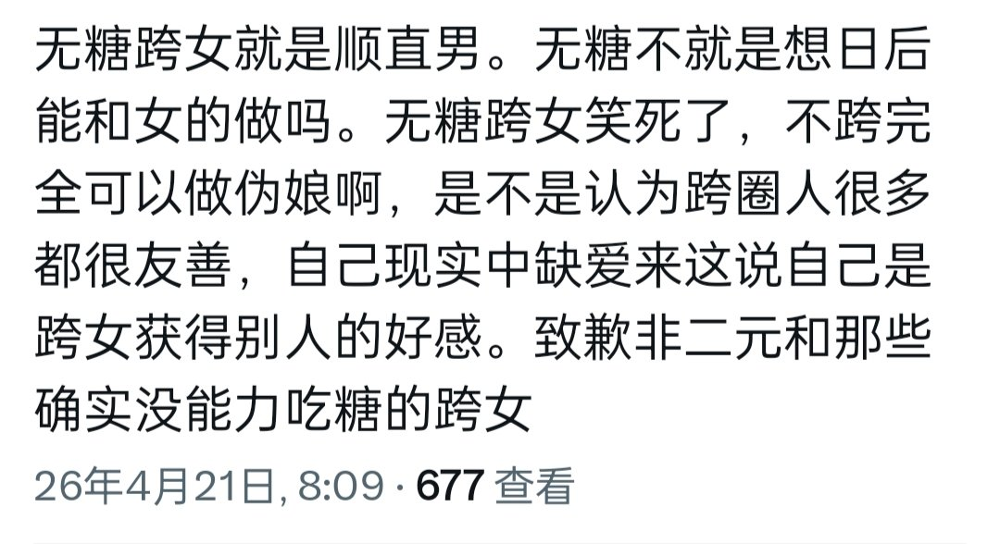

恋恋喜欢心跳大冒险🍥
@ansiyao520
考虑了一下。只转帖有些不负责任。我还是匿名转载并附上自己的评论吧。
我不太认同这种可能引起跨性别群体内部对立的评论。无论是什么样的跨性别姐妹，我们都有共同的社会友善追求，没必要把精力耗在内斗上。就我个人而言，我是无糖跨女，我觉得身体的性别认同方式可以不同，心灵性别对我来说才是最重要的。（参见维持性别的有利点，改变性别的不利点）
我之前也犯过一些错误——因为对药物的恐惧、执着于自己的道路，盲目地排斥和抵触过含糖跨女。现在回头看，那是不对的，应该尊重每个人的选择。
我们都是姐妹。互帮互助、共同进步
(*´・ｖ・)。
